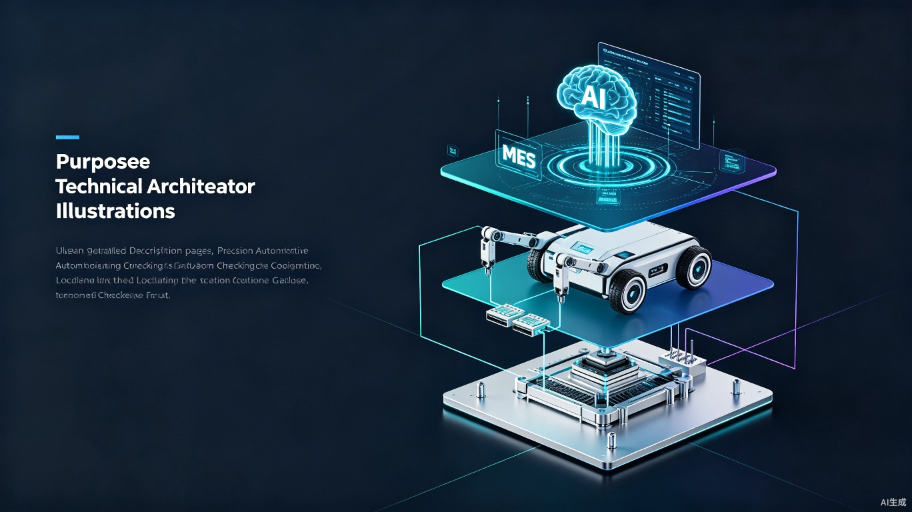
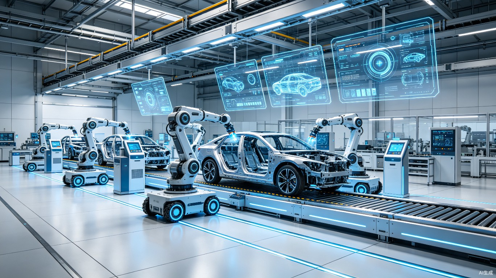

谁在做这件事
不是空谈概念，而是基于20年行业积淀的实战方案
为什么若宇能做这件事？我们是蔚来ES8整车Cubing的供应商，是宝马前桥自动检具的开发者，是上汽大众A7L地板缝隙匹配样架的制造者。我们比任何人都懂检具，也比任何人都清楚检具的痛点。当光象科技的Phi-Bot X1进入蔚来工厂时，我们看到的不是威胁，而是检具行业升级的历史性机遇。
行业三大痛点
20年来，检具的"精度"在进化，但"执行方式"始终没变
人力瓶颈：检测效率受限于工人
传统检具检测高度依赖工人手持百分表、肉眼读数、手动记录。单工位检测耗时15-30分钟，工人每天有效检测时间不足6小时。疲劳、情绪波动、技能差异导致检测结果一致性差，漏检率高达3-5%。
数据孤岛：检测结果无法实时追溯
检测数据分散在纸质记录单、Excel表格中，无法与MES系统实时对接。出现质量问题时，追溯耗时数小时甚至数天。全尺寸检测覆盖率低，多数工厂仍停留在抽检模式。
换型困难：柔性生产与刚性检具的矛盾
新车型开发周期从36个月压缩至18个月，但检具从设计到交付仍需8-12周。多车型混线生产时，检具换型耗时数小时，难以匹配柔性制造节拍。传统专机自动化投资大、周期长、换型成本高昂。
根因分析：过去20年，检具从"刚性物理匹配"进化到"光学非接触扫描"，但始终没能改变一个事实——"人"是检测的执行终端。检具再精密，也需要人来操作。这才是整个质检体系的瓶颈所在。
宏观背景：变革窗口已打开
人形机器人"进厂元年"已至
2026年被定义为人形机器人"进厂打工"元年。光象科技Phi-Bot X1在蔚来焊接上下料场景连续作业3天、累计21.5小时，零失误、零中断，部署周期仅需1周[3]。优必选Walker S2已入驻蔚来智慧工厂，独立完成车门铰链装配、内饰拧紧、整车质检[7]。浙江人形机器人创新中心末端重复定位精度达±0.02mm[6]——这已经接近甚至超越了传统检具的检测精度需求。
核心方案：Phi-Gauge 智能检具系统
"本体保留 + 模块叠加"——在现有检具基础上嫁接人形机器人，无需推倒重来

架构设计
| 维度 | 保留（若宇核心资产） | 改造（智能化升级） | 叠加（人形机器人） |
|---|---|---|---|
| 机械结构 | Base板、定位销、夹紧器，0.05mm级精度基准 | 加装微型传感器、集成化探针模块 | 人形机器人搭载标准化检测头，±0.02mm重复定位 |
| 数据通讯 | — | OPC UA / MQTT工业通讯模块，对接MES | 实时上传检测数据，云端AI判定OK/NG |
| 执行终端 | — | 自动化检测程序预设 | 替代工人，24小时不间断执行 |
| 智能决策 | — | 本地边缘计算单元 | AI视觉缺陷识别（划痕、凹坑、色差） |
检测数据闭环
flowchart LR
A[人形机器人执行检测] --> B[实时上传数据至边缘网关]
B --> C[云端AI判定 OK / NG]
C -->|OK| D[自动流入下一工序]
C -->|NG| E[机器人标记+分拣至隔离区]
E --> F[数据反馈工艺优化系统]
F --> G[工艺参数自动调整]
G --> A
检测场景模拟器
点击下方场景，查看 Phi-Gauge 在不同检具类型上的工作流程
门板总成智能检测流程
以蔚来ES8门板总成检具为例（若宇已有该型检具制造经验）。Phi-Bot X1轮式机器人自主导航至检具工位，双臂协同操作：
节拍提升 40% 覆盖率 100% 人工替代 2人/班
侧围外板智能检测流程
针对大型钣金件（如侧围外板、翼子板），传统检测需2名工人配合操作。Phi-Gauge系统通过机器人搭载蓝光扫描头，实现非接触全尺寸检测：
精度 0.02mm 扫描时间 8min 替代 CMM抽检
整车Cubing智能匹配检测
整车Cubing（主检具）是尺寸工程的核心设备。Phi-Gauge可实现整车外观件在Cubing上的自动化匹配检测，覆盖间隙、面差、对齐度等关键指标：
DTS精度 ±0.1mm 整车覆盖 100% 工时缩短 60%
为什么是 Phi-Gauge？
六种核心优势，重新定义汽车质检
关键差异化：我们不是做"机器人"的公司，而是做"检具"的公司。市场上所有人形机器人厂商都在找场景落地，而若宇拥有20年检具Know-How + 头部车企客户资源 + 76项专利技术。Phi-Gauge的核心壁垒不在于机器人本身，而在于检具与机器人的接口标准化——这正是若宇独一无二的竞争优势。
投资回报测算器
输入您的工厂参数，实时测算 Phi-Gauge 的投资回报
实施路线图
从试点验证到全域扩展，三步走战略

选择1-2个高价值检具工位（如整车Cubing或大型钣金检具），引入光象科技/优必选人形机器人，配合若宇改造的智能检具模块，进行离线全检验证。
目标 验证检测精度达标、节拍匹配、系统稳定性 产出 单工位替代人工，数据上传MES
扩展至5-10个关键工位，实现"生产-检测-反馈"实时闭环。机器人检测结果直接驱动工艺参数调整和分拣决策。引入AI视觉缺陷检测，从尺寸检测扩展至外观质量全检。
目标 关键工序100%在线检测 产出 工艺优化数据闭环，不良率下降30%
在整车厂全面推广Phi-Gauge系统，覆盖内饰、外饰、钣金、焊接总成等全部检具类型。机器人从质检向拧紧、涂胶、线束插接、物流搬运延伸。目标：打造"无人工厂"标杆产线。
目标 全厂质检无人化 产出 行业标杆案例，技术输出
市场机遇
千亿级汽车质检市场，智能化升级窗口期
目标市场
中国汽车制造业质检设备市场规模超800亿元，其中检具及测量设备占比约15%。随着新车型开发周期压缩和多车型混线生产普及，柔性化智能检具需求年增长率超25%。
商业模式
设备销售：智能检具+机器人集成方案一次性销售；订阅服务：软件升级、AI模型训练、远程运维年费；检测服务：按检测量计费的第三方质检外包。
目标客户
tier-1 主机厂质检部门（蔚来、比亚迪、吉利等）、tier-2 零部件供应商、第三方检测机构。优先切入已有合作关系的客户（若宇已服务一汽大众、宝马、蔚来等）。
社会价值
减少重复性劳动伤害，提升中国汽车制造全球竞争力。推动"中国制造"向"中国智造"升级，为质检工人提供向机器人运维工程师转型的职业通道。
结语：抢占"制造智能化"战略高地
未来的汽车工厂，检具不再是被动的测量工具，而是与机器人交互的智能节点。每台检具都是一个数据采集终端，每台机器人都是一个执行单元，它们通过MES系统和AI大模型连接成一张智能网络。
若宇检具拥有20年行业积淀、76项专利、240+人制造团队、服务头部车企的深厚客户资源。我们不是从零开始的创业者，而是站在产业制高点上的升级者。当行业变革的浪潮到来时，我们已经准备好了。
行动呼吁：我们呼吁行业关注"检具-机器人接口标准化"的建立。只有当检具具备标准化的机械、电气、通讯交互接口，人形机器人的规模化部署才能真正提速。若宇检具愿以20年行业经验，牵头推动这一标准的制定。同时，我们诚邀蔚来、宝马、上汽大众等合作伙伴，在2026年内启动 Phi-Gauge 试点项目，共同抢占"制造智能化"的战略高地。